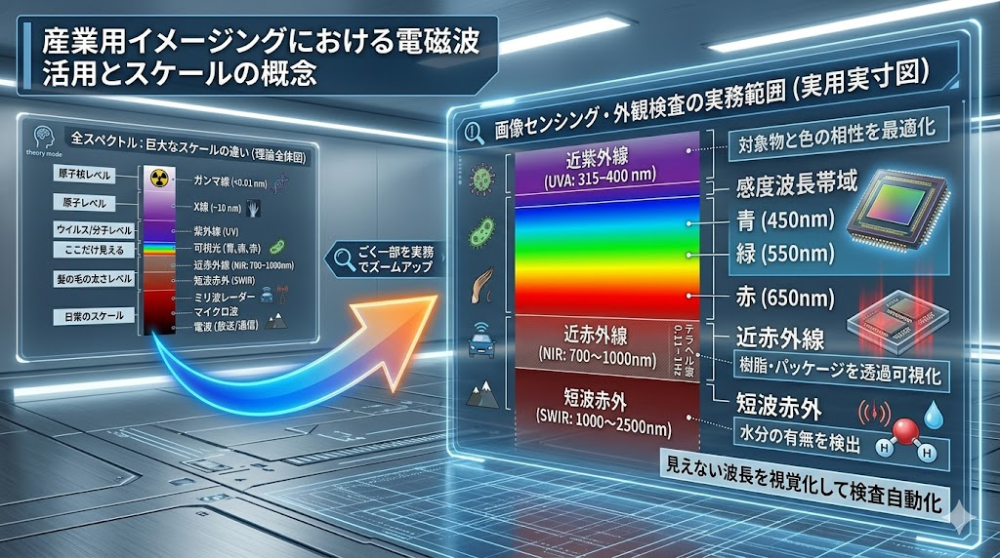

「波の性質」を利用し、肉眼を超えた自動検査システムを構築する

波長が短い（450nm付近）ほど、微細な凹凸で激しく散乱します。
波長が長い（850nm以上）ほど、物質内部へ浸透・透過しやすくなります。
波長によって屈折率が異なるため、ピント位置がズレる現象に注意が必要です。
単に「撮る」のではなく、波長の物理特性を利用して「判定を容易にする（アルゴリズムを単純化する）」ことが、安定した自動化の鍵です。